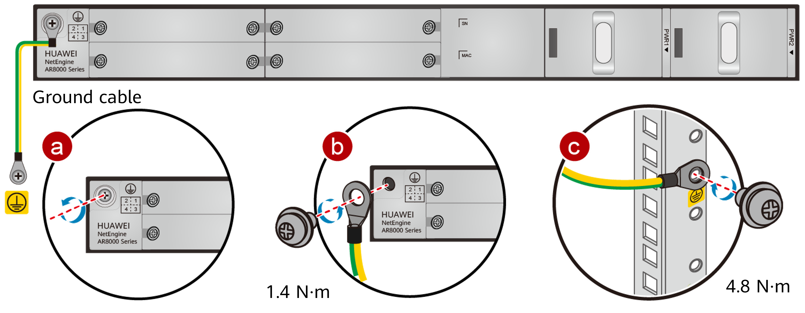

Connecting the Ground Cable
Context
- The ground cable of a router must be correctly connected to protect the router against lightning and interference.
- Do not power on the router before you finish connecting cables.
Tools and Accessories
- Phillips screwdriver
- Multimeter
- ESD wrist strap
- Ground cable
- M6 screw (purchased separately)
Procedure
- Put on an ESD wrist strap. Ensure that the ESD wrist strap is grounded and in close contact with your wrist.
- Connect the ground cable.
- Use a Phillips screwdriver to remove the M4 screw from the ground terminal on the rear panel of the router. Keep the M4 screw in an appropriate place for later use.
- Align the M4 lug of the ground cable with the screw hole on the ground terminal, secure the cable with a M4 screw, and tighten the M4 screw with a torque of 1.4 N·m.
- Connect the M6 lug of the ground cable to a ground terminal in the cabinet, secure the M6 lug with an M6 screw, and tighten the M6 screw with a torque of 4.8 N·m.


The ground cable of the AR8700 is located below the power module at the rear of the chassis. The routing direction must be constrained: routing the cable upward will interfere with the insertion and removal of the power module. Route the cable to the right side as shown in Figure 1, and connect it to the cabinet ground point.
Follow-up Procedure
After connecting the ground cable, verify that:
- The ground cable is securely connected to the ground terminal.
- The resistance between the ground terminal and router ground point is less than 5 Ω on a multimeter.